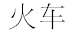
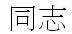
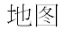

|
| СХЕМА ИЗУЧЕНИЯ КИТАЙСКОГО |
|

|  поезд ( состоит из иероглифов «огонь» и «повозка») товарищ:) (состоит из «вместе» и «воля, желание») карта (состоит из «земля» и «план, рисунок»)Мысль понятна ?:) На этом мы бы могли и остановиться. Как впрочем, и вы, если вас не интересует разговорный китайский язык. При должном старании выучить письменный китайский язык, можно за пол года. Но поверьте нужно постараться. Разговорный китайский язык нам пришлось учить после второй поездки в Китай. Захотелось общаться, торговаться и разговаривать с китайцам. Здесь нам пришлось столкнуться с понятием тона в китайском языке. Помнить с каким тоном произносится тот или иной слог в слове мучительное занятие. При не такой уж частой разговорной практике это почти неподъемная задача. Нам помогли свои системы, система цветовой кодировки тона и система кодировки тона по материалу. Используя их, мы уже не мучались, когда нужно было вспомнить тон, с каким произносится иероглиф. Сейчас мы кодируем тон иероглифа сразу в иероглиф, при запоминании его по системе МАО. Так что мы по-прежнему не знаем, как произносится тот или иной иероглиф, но мы знаем, с каким тоном он произносится. | ||
оглавление | 40 | ||